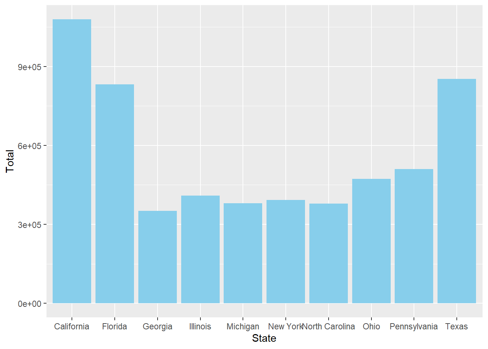
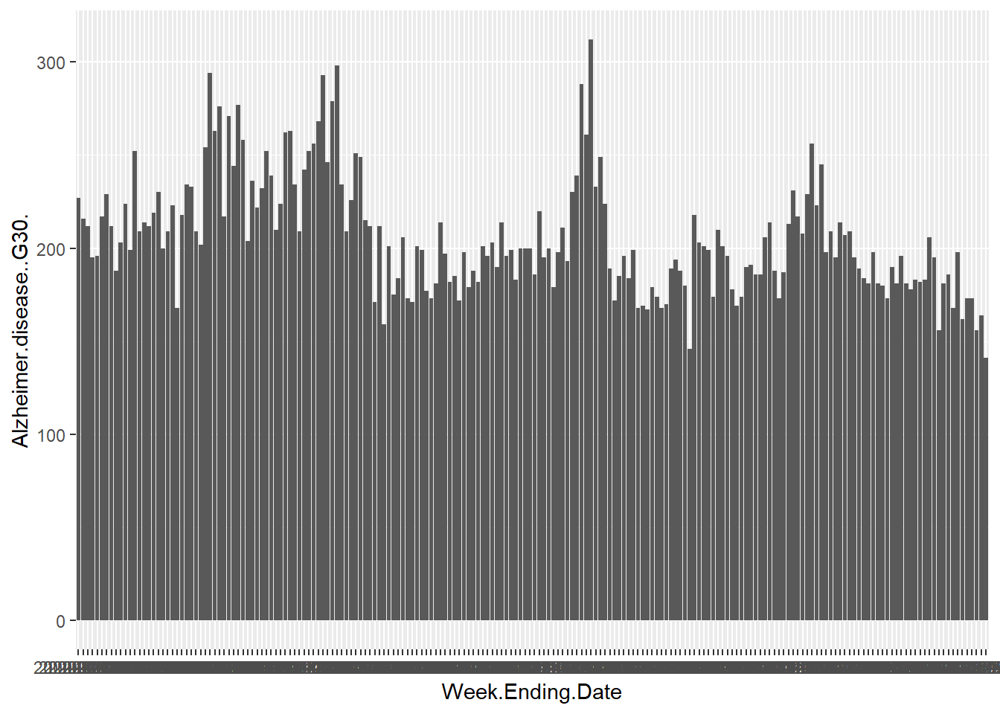
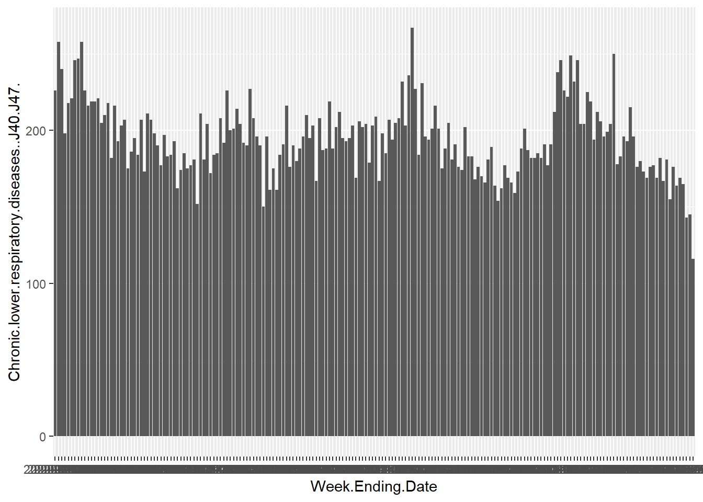

set.seed(200)
library(dplyr)
Attaching package: 'dplyr'The following objects are masked from 'package:stats':
filter, lagThe following objects are masked from 'package:base':
intersect, setdiff, setequal, unionlibrary(ggplot2)Brody Johnson
The data set selected for this exercise consists of the counts of deaths occurred by state and cause of death in the years of 2020 to 2023. The causes of death consist of diabetes, Alzheimer’s, various respiratory diseases, and more. The data set was downloaded from the CDC website linked below.
https://data.cdc.gov/NCHS/Weekly-Provisional-Counts-of-Deaths-by-State-and-S/muzy-jte6/about_data
Below, I am loading the libraries needed for this exercise and setting the seed so it is easy to reproduce results.
Attaching package: 'dplyr'The following objects are masked from 'package:stats':
filter, lagThe following objects are masked from 'package:base':
intersect, setdiff, setequal, unionReading the data set (csv file) into R. The raw data set is starting with 35 columns and 10,476 rows of data.
US_deaths = read.csv("Weekly_Provisional_Counts_of_Deaths_by_State_and_Select_Causes__2020-2023_20240702.csv", header=TRUE)
dplyr::glimpse(US_deaths)Rows: 10,476
Columns: 35
$ Data.As.Of <chr> …
$ Jurisdiction.of.Occurrence <chr> …
$ MMWR.Year <int> …
$ MMWR.Week <int> …
$ Week.Ending.Date <chr> …
$ All.Cause <int> …
$ Natural.Cause <int> …
$ Septicemia..A40.A41. <int> …
$ Malignant.neoplasms..C00.C97. <int> …
$ Diabetes.mellitus..E10.E14. <int> …
$ Alzheimer.disease..G30. <int> …
$ Influenza.and.pneumonia..J09.J18. <int> …
$ Chronic.lower.respiratory.diseases..J40.J47. <int> …
$ Other.diseases.of.respiratory.system..J00.J06.J30.J39.J67.J70.J98. <int> …
$ Nephritis..nephrotic.syndrome.and.nephrosis..N00.N07.N17.N19.N25.N27. <int> …
$ Symptoms..signs.and.abnormal.clinical.and.laboratory.findings..not.elsewhere.classified..R00.R99. <int> …
$ Diseases.of.heart..I00.I09.I11.I13.I20.I51. <int> …
$ Cerebrovascular.diseases..I60.I69. <int> …
$ COVID.19..U071..Multiple.Cause.of.Death. <int> …
$ COVID.19..U071..Underlying.Cause.of.Death. <int> …
$ flag_allcause <lgl> …
$ flag_natcause <lgl> …
$ flag_sept <chr> …
$ flag_neopl <chr> …
$ flag_diab <chr> …
$ flag_alz <chr> …
$ flag_inflpn <chr> …
$ flag_clrd <chr> …
$ flag_otherresp <chr> …
$ flag_nephr <chr> …
$ flag_otherunk <chr> …
$ flag_hd <chr> …
$ flag_stroke <chr> …
$ flag_cov19mcod <chr> …
$ flag_cov19ucod <chr> …After taking a glimpse at the data, it is noticed the last several columns are variables acting as “flags” that would not offer much in terms of data analysis so first these are removed.
Data.As.Of Jurisdiction.of.Occurrence MMWR.Year MMWR.Week
Length:10476 Length:10476 Min. :2020 Min. : 1.00
Class :character Class :character 1st Qu.:2020 1st Qu.:13.00
Mode :character Mode :character Median :2021 Median :25.00
Mean :2021 Mean :25.21
3rd Qu.:2022 3rd Qu.:37.00
Max. :2023 Max. :53.00
Week.Ending.Date All.Cause Natural.Cause Septicemia..A40.A41.
Length:10476 Min. : 12.0 Min. : 12 Min. : 0.00
Class :character 1st Qu.: 366.8 1st Qu.: 331 1st Qu.: 13.00
Mode :character Median : 931.5 Median : 837 Median : 20.00
Mean : 2362.3 Mean : 2152 Mean : 47.76
3rd Qu.: 1548.0 3rd Qu.: 1405 3rd Qu.: 33.00
Max. :87415.0 Max. :81622 Max. :993.00
NA's :4393
Malignant.neoplasms..C00.C97. Diabetes.mellitus..E10.E14.
Min. : 10.0 Min. : 0.00
1st Qu.: 66.0 1st Qu.: 22.00
Median : 171.0 Median : 34.00
Mean : 431.9 Mean : 90.65
3rd Qu.: 282.0 3rd Qu.: 57.00
Max. :12284.0 Max. :2601.00
NA's :10 NA's :2242
Alzheimer.disease..G30. Influenza.and.pneumonia..J09.J18.
Min. : 0.0 Min. : 0.00
1st Qu.: 21.0 1st Qu.: 13.00
Median : 40.0 Median : 20.00
Mean : 103.9 Mean : 53.17
3rd Qu.: 65.0 3rd Qu.: 34.00
Max. :3075.0 Max. :1916.00
NA's :1744 NA's :4235
Chronic.lower.respiratory.diseases..J40.J47.
Min. : 0.0
1st Qu.: 27.0
Median : 48.0
Mean : 121.2
3rd Qu.: 83.0
Max. :3708.0
NA's :1511
Other.diseases.of.respiratory.system..J00.J06.J30.J39.J67.J70.J98.
Min. : 0.00
1st Qu.: 14.00
Median : 21.00
Mean : 52.64
3rd Qu.: 37.00
Max. :1135.00
NA's :4171
Nephritis..nephrotic.syndrome.and.nephrosis..N00.N07.N17.N19.N25.N27.
Min. : 0.00
1st Qu.: 14.00
Median : 23.00
Mean : 58.75
3rd Qu.: 40.00
Max. :1349.00
NA's :3760
Symptoms..signs.and.abnormal.clinical.and.laboratory.findings..not.elsewhere.classified..R00.R99.
Min. : 0.00
1st Qu.: 12.00
Median : 19.00
Mean : 53.78
3rd Qu.: 33.00
Max. :3541.00
NA's :4663
Diseases.of.heart..I00.I09.I11.I13.I20.I51. Cerebrovascular.diseases..I60.I69.
Min. : 10.0 Min. : 0.0
1st Qu.: 72.0 1st Qu.: 25.0
Median : 190.0 Median : 48.0
Mean : 493.5 Mean : 133.1
3rd Qu.: 329.0 3rd Qu.: 80.0
Max. :16538.0 Max. :3833.0
NA's :12 NA's :1445
COVID.19..U071..Multiple.Cause.of.Death.
Min. : 0.0
1st Qu.: 22.0
Median : 53.0
Mean : 262.6
3rd Qu.: 139.0
Max. :26028.0
NA's :1755
COVID.19..U071..Underlying.Cause.of.Death.
Min. : 0.0
1st Qu.: 19.0
Median : 45.0
Mean : 241.4
3rd Qu.: 128.0
Max. :23954.0
NA's :2296 For the sake of looking at a categorical variable, we can look at the distribution of natural cause deaths by state. The bar plot is quite busy with all of the states so this was narrowed down to the top 10.
result = US_deaths %>%
group_by(State = as.factor(Jurisdiction.of.Occurrence)) %>%
summarize(Total = sum(Natural.Cause)) %>%
arrange(desc(Total)) %>%
filter(State != "United States") %>%
top_n(10, wt = Total)
ggplot(result, aes(x=State, y=Total))+
geom_bar(stat = "identity", fill = "skyblue")
For the purpose of this exercise, I’m going to focus on the state of Texas. For one, it reduces the scope that will be analyzed but second, it also drastically reduced the missing values to only the COVID-19 related parameters.
Data.As.Of Jurisdiction.of.Occurrence MMWR.Year MMWR.Week
Length:194 Length:194 Min. :2020 Min. : 1.00
Class :character Class :character 1st Qu.:2020 1st Qu.:13.00
Mode :character Mode :character Median :2021 Median :25.00
Mean :2021 Mean :25.21
3rd Qu.:2022 3rd Qu.:37.00
Max. :2023 Max. :53.00
Week.Ending.Date All.Cause Natural.Cause Septicemia..A40.A41.
Length:194 Min. :2489 Min. :2489 Min. :46.00
Class :character 1st Qu.:4297 1st Qu.:3884 1st Qu.:61.25
Mode :character Median :4528 Median :4100 Median :68.00
Mean :4807 Mean :4396 Mean :68.45
3rd Qu.:5035 3rd Qu.:4613 3rd Qu.:74.00
Max. :7208 Max. :6796 Max. :93.00
Malignant.neoplasms..C00.C97. Diabetes.mellitus..E10.E14.
Min. :574.0 Min. : 79.0
1st Qu.:809.2 1st Qu.:138.0
Median :835.0 Median :150.0
Mean :832.6 Mean :151.9
3rd Qu.:859.0 3rd Qu.:165.0
Max. :913.0 Max. :248.0
Alzheimer.disease..G30. Influenza.and.pneumonia..J09.J18.
Min. :141.0 Min. : 22.00
1st Qu.:183.2 1st Qu.: 47.25
Median :200.0 Median : 56.00
Mean :206.3 Mean : 60.54
3rd Qu.:222.8 3rd Qu.: 68.00
Max. :312.0 Max. :121.00
Chronic.lower.respiratory.diseases..J40.J47.
Min. :116.0
1st Qu.:178.2
Median :193.0
Mean :194.7
3rd Qu.:207.8
Max. :267.0
Other.diseases.of.respiratory.system..J00.J06.J30.J39.J67.J70.J98.
Min. : 41.00
1st Qu.: 56.00
Median : 64.50
Mean : 65.29
3rd Qu.: 73.75
Max. :101.00
Nephritis..nephrotic.syndrome.and.nephrosis..N00.N07.N17.N19.N25.N27.
Min. : 46.0
1st Qu.: 81.0
Median : 88.5
Mean : 88.9
3rd Qu.: 96.0
Max. :125.0
Symptoms..signs.and.abnormal.clinical.and.laboratory.findings..not.elsewhere.classified..R00.R99.
Min. : 16.00
1st Qu.: 38.00
Median : 46.00
Mean : 59.38
3rd Qu.: 56.75
Max. :340.00
Diseases.of.heart..I00.I09.I11.I13.I20.I51. Cerebrovascular.diseases..I60.I69.
Min. : 498.0 Min. :127.0
1st Qu.: 913.8 1st Qu.:218.0
Median : 960.0 Median :230.5
Mean : 968.1 Mean :231.7
3rd Qu.:1014.5 3rd Qu.:243.0
Max. :1271.0 Max. :302.0
COVID.19..U071..Multiple.Cause.of.Death.
Min. : 0.00
1st Qu.: 92.75
Median : 239.00
Mean : 543.73
3rd Qu.: 729.25
Max. :2561.00
NA's :2
COVID.19..U071..Underlying.Cause.of.Death.
Min. : 0.0
1st Qu.: 63.5
Median : 206.0
Mean : 492.2
3rd Qu.: 657.0
Max. :2413.0
NA's :3 Below are three plots, each depicting the number of deaths caused by natural causes, Alzheimer disease, and chronic lower respiratory diseases respectively.
In the natural cause plot, we see definitive spikes in deaths in mid-2020, late 2020, Fall of 2021, and early 2022. This is interesting because it does not seem like there is a particular time of year these spikes are ocurring and then the spikes are almost nonexistent in 2023.
The Alzheimer disease plot below is more stable than the natural cause plot above. It appears the deaths started to drop off in the Spring of 2021 with a couple of spikes in 2022 and 2023.
ggplot(TX_deaths, aes(x = Week.Ending.Date, y = Alzheimer.disease..G30.))+
geom_bar(stat= "identity")
Deaths due to respiratory disease (below) is something more of what I would expect in a time series data set with increases and decreases with the seasons.
ggplot(TX_deaths, aes(x = Week.Ending.Date, y = Chronic.lower.respiratory.diseases..J40.J47.))+
geom_bar(stat= "identity")
This Section Contributed by Vinayak Revisanker
# # Display summary of the synthetic data
# summary(synthetic_data)
#
# # Plotting the synthetic number of deaths by Diabetes in Texas
# ggplot(synthetic_data, aes(x = as.Date(Week.Ending.Date), y = Diabetes.mellitus..E10.E14.)) +
# geom_line() +
# labs(title = "Synthetic Diabetic Deaths in Texas", x = "Week Ending Date", y = "Number of Deaths")# # Display summary of the synthetic data
# summary(synthetic_data)
#
# # Plotting the synthetic number of deaths by Influenza and pneumonia disease in Texas
# ggplot(synthetic_data, aes(x = as.Date(Week.Ending.Date), y = Influenza.and.pneumonia..J09.J18.)) +
# geom_line() +
# labs(title = "Influenza and pneumonia Disease Deaths in Texas", x = "Week Ending Date", y = "Number of Deaths")# # Display summary of the synthetic data
# summary(synthetic_data)
#
# # Plotting the synthetic number of deaths by Septicemia diseases in Texas
# ggplot(synthetic_data, aes(x = as.Date(Week.Ending.Date), y = Septicemia..A40.A41.)) +
# geom_line() +
# labs(title = "Septicemia Disease Deaths in Texas", x = "Week Ending Date", y = "Number of Deaths")